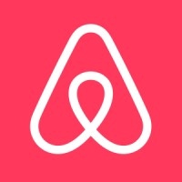

Hey! I'm Devin 👋
Currently in NYC, building AI developer tooling at CLEAR
I'm interested in backend systems, applied machine learning, and building things that actually ship. Let's chat!
Computer Science + Business Administration student at UC Berkeley, graduating May 2028.
Experience
Software Engineering Intern
CLEAR
Building an AI code reviewer that automatically drops inline PR comments on GitHub — runs on Kubernetes and uses Claude/AWS Bedrock under the hood, cutting review time by 60% across 5+ engineering teams.
- TypeScript
- AWS Bedrock
- Kubernetes
- GitHub Apps
- Claude AI
Software Engineering Intern (Contract)
AMD
Built compliance tooling that mapped AMD's chip-level memory encryption tech to SOC2 security requirements — translating low-level hardware features into auditable evidence across 5 security personas.
- Python
- Pandas
- Kubernetes
- SOC2
- Security
Machine Learning Engineer
Launchpad
Training robots and building computer vision pipelines as an ML engineer — using PyTorch, imitation learning, and fine-tuned foundation models across 3+ projects.
- Python
- PyTorch
- Computer Vision
- Imitation Learning
- Foundation Models

Software Engineering Intern (Contract)
Airbnb
Rebuilt parts of Airbnb's payments infrastructure and wrote load-testing tools to simulate 10,000+ concurrent users — also cut debugging time by 40% with new CI/CD test tooling.
- Python
- Flask
- REST APIs
- gRPC
- SQL
- CI/CD
Operations Intern
TurbineOne
Automated a ton of manual ops reporting — built Python ETL pipelines and a React/Flask dashboard that centralized KPIs for the whole team.
- Python
- React
- Flask
- PostgreSQL
- ETL
Projects
Whisk — Matcha Making Robot
May 2026A robot arm that makes matcha from scratch — controlled by a Gemini AI agent using real-time computer vision to locate tools, with inverse kinematics for precise manipulation and 90%+ task completion.
Oculy
Dec 2025Eye-tracking software that classifies gaze direction from raw EEG brain signals using a 1D CNN — lets you control a computer with just your eyes, with sub-50ms latency and 85%+ classification accuracy.